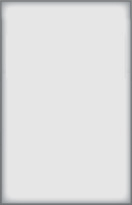
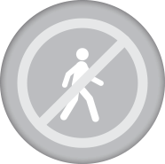

semaine
mois
année
Semaine 11-17 Avril 2013
TAUX DE MISE EN PLACE DE
L'ACTION PRIORITAIRE
AP mises en place:
16
AP non mises en place:
25
Taux de visites effectuées
objectif
prévu
82
%

65
%
Nombre de visites annulées

04
Sur un total de
15 visites